CRM · 排行榜與大獎回放
排行榜與大獎回放
排行榜與大獎回放的規格書。讓玩家可查看玩家之間的最大贏分和最大倍數，可由日榜和周榜去進行排序。玩家也可查詢上一期和進行中(這一期)的排行榜。此外，玩家也可以回放排行榜上的贏分，體驗大獎連線快感。
各節標題下的小標註明來源：
沿用開發版
沿用開發版 · 已依畫面規格調整
畫面規格
排行榜與大獎回放的規格書。讓玩家可查看玩家之間的最大贏分和最大倍數，可由日榜和周榜去進行排序。玩家也可查詢上一期和進行中(這一期)的排行榜。此外，玩家也可以回放排行榜上的贏分，體驗大獎連線快感。
| 項目 | v1 | 說明 |
|---|---|---|
| 四張榜（日／週 × 倍數／贏分） | 做 | 每張榜含「進行中」與「上一期已結算」兩個頁籤。 |
| 專線 × 幣別分界 | 做 | 不跨專線、不跨幣別，回放也不跨。 |
| 只開專線、共線不開 | 做 | 專線＝底下只有一個站台的線路（如 PB10）；共線（如 AWS101，含 10 個站）一律不開榜。開關預設為否，需逐一明確開啟。 |
| 大獎回放（站內） | 做 | 以瀏覽器新分頁開啟遊戲端回放網址，玩家手動按 spin。 |
| 從榜上進入該款遊戲 | 做 | 導流用；點遊戲圖片或名稱先跳確認視窗，確定後帶同一組 token 呼叫專線遊戲網址。 |
| 發放獎勵 | 不做 | 只預留結算快照的資料欄位與 UI 版位。提案 V1.6 已定的「週榜前三發 FS 卡、T+1 人工審核」屬 v2。 |
| 玩家個人區塊（自己的名次／個人最佳） | 不做 | 2026-09-09 拍板本版不做。 |
| 回放的免責說明文字 | 不做 | 只靠遊戲端的英文回放標示。已知風險見 回放 03。 |
| 站外分享（縮網址、社群媒體） | 不做 | v2 採與站內同一套 log 重播，非預錄影片；v1 先不開對外入口。 |
| 營運後台 | 不做 | 門檻與開關由 Server 端調整，不需發版（見 設定 01）。 |
| 跨專線曝光 | 不做 | 榜單與回放一律不顯示其他專線的資料。 |
| 項次 | 提案 V1.6 原文 | 本規格書 |
|---|---|---|
| 計分方式 | §04 波2：「個人榜＋全線路榜（日賽 net win 計分）」 | 單局贏分與單局倍數兩張榜，不做 net win 累積賽。原因：net win 沒有單一局可回放，也沒有對應的單一倍數可標示，與本功能的回放主線接不上。 |
| 榜的範圍 | §01 曝光引擎：「全線路排行榜…玩家在任何一款遊戲裡，都看得到別款遊戲有人贏大的」 | 專線 × 幣別各一張榜，且只開專線（底下只有一個站台的線路）。跨站台曝光取消（等同替其他站台宣傳，站長不會接受）；「看到別款遊戲開大獎」仍成立，來源改為同專線內的其他 Combo 遊戲。 |
全文一律使用下列名詞。同一個概念不得出現第二種寫法，避免開發與測試對不上。
| 名詞 | 定義 | 備註 |
|---|---|---|
| 線路 | 投放的通道，有自己的代碼（例：PB10、AWS101）。一條線路底下可能只有一個站台，也可能涵蓋多個站台。 | - |
| 專線 | 底下只有一個站台的線路。例：PB 站的線路代碼為 PB10，該線路就只有 PB 這一個站。本功能只開放專線。 | 因為只有一個站台，線路代碼等同站台身分，榜才不會混到別人家的玩家。 |
| 共線 | 涵蓋多個站台的線路。例：AWS101 底下有 10 個站、幣別範圍太廣。 | 一律不開排行榜。開了等於把不同站台的玩家混在同一張榜上。 |
| 幣別 | 玩家下注所使用的貨幣代碼。同一條專線底下可以有多種幣別（例：PB 底下有菲律賓、越南、柬埔寨等）。 | 與專線共同構成榜的分界。 |
| playID | 我方系統中識別玩家的代碼。 | 榜上遮罩後顯示，不露出完整值。我方是遊戲供應商，不取得玩家在站台的帳號。 |
| 遮罩 playID | playID 遮去中段後的顯示字串（例：pl****21）。 | 遮罩規則（露幾碼、遮幾碼）由前端統一，全文件與所有畫面一致。 |
| 單局 | 一筆計分單位。一般情況等於一次押注旋轉；一次 Free Game 整段合併為一個單局。 | 定義見 規則 03.4。 |
| 倍數 | 該單局的 win ÷ bet，無單位。 | 可跨幣別比較，但本功能仍不跨專線。 |
| 贏分 | 該單局的 win 金額，帶幣別。 | 不同幣別不可互比，故贏分榜必須同幣別。 |
| 進榜門檻 | 一筆成績要被列入榜單所需達到的最低倍數，目前為 50 倍。未達門檻者不進榜。 | 兩張榜共用同一種尺（倍數），四張榜共用同一個值（日榜與週榜不分開設），由 Server 端調整。 |
| 榜期 | 一張榜的計算期間。日榜＝當日 08:00 至次日 08:00；週榜＝週一 08:00 至次週一 08:00（UTC+8）。 | 全系統唯一時區 UTC+8（2026-07-20 定案）。 |
| 進行中榜 | 目前榜期正在累積的榜單，後端即時寫入。 | 畫面於開啟或切換時讀取一次，停留期間不自動更新（榜單畫面 02.3）。 |
| 已結算榜 | 榜期結束時凍結下來的快照，內容不再變動。 | 預設顯示的就是這一張。只保留最近一期。 |
| 快照 | 結算瞬間寫下的完整榜單資料（含名次、玩家、遊戲、倍數、贏分、幣別、局型（是否為 buy bonus）、該局識別碼）。 | v2 發獎時的唯一依據。 |
| 回放 | 依該局的完整過程紀錄重演該局，從轉盤到大獎結算。 | 不是預錄影片，是依紀錄重演。實作方式為以瀏覽器新分頁開啟遊戲端的回放網址。 |
| 回放網址 | 遊戲端提供、用來重演某一局的網址。由後端隨榜單資料每筆回傳（已驗證專線與幣別）；CRM 以新分頁開啟並帶上玩家當前工作階段的同一組 token。 | 沒有回放網址的筆，回放按鈕改為灰色、不可點。 |
| 英雄卡 | 榜單前 3 名使用的大卡片版型（畫面上稱「前三名卡片」，排序 2·1·3），含遊戲圖、玩家、該榜的主要數字（倍數榜＝倍數、贏分榜＝贏分）與 replay 按鈕，不顯示遊戲名稱。 | 第 4～20 名用列表的卡片列。前 3／20 為 v1 固定值（設定 01.1）。 |
| BUY BONUS 標籤 | 標示該筆成績來自 buy bonus（花錢購買觸發）的小標籤。 | 只作標示，不改計分也不改排序。 |
| FS 卡 | Free Spin 卡，CRM 發給玩家的免費旋轉道具，使用時 bet＝0。 | 與遊戲本身的 Free Game 是兩件不同的事，不可混用。 |
| Free Game | 遊戲本身的免費旋轉特色玩法，由一次押注局觸發後連續進行數局。 | 本功能整段合併算一局；整段結果於觸發局結算時即已確定，計分不等演出跑完（規則 02.1 STEP 04）。 |
| buy bonus | 玩家付費直接購買一次特色玩法觸發的機制。 | 列入榜單，計分方式見 規則 03.4。 |
玩家動線見 榜單畫面 01。
本流程每筆注單結算後跑一次，不是排程批次。玩家開出大獎後應在數秒內看到自己出現在「進行中」榜上（下次開啟或切換榜單時讀到）。
board_enabled[線路代碼][幣別]，為否 → 直接丟棄。專線與共線都查同一張表；共線因為從未被開啟，在此就被擋掉。threshold（目前 50 倍，四張榜共用一個值）才繼續；未達門檻直接丟棄，不寫入任何榜。snapshot_keep = 1，只保留最近一期，上上期的快照於此時被覆蓋。共 4 張榜＝ 2 種榜期 × 2 種計分。每張榜各有「進行中」與「上一期已結算」兩個頁籤，所以玩家可看到的榜單組合共 8 種。
| 榜 | 榜期 | 排序依據 | 名額 | 說明 |
|---|---|---|---|---|
| 日榜 · 倍數 | 每日 08:00 | 單局倍數（大→小） | Top 20 | 小額玩家也上得了，數字無單位。 |
| 日榜 · 贏分 | 每日 08:00 | 單局贏分（大→小） | Top 20 | 同幣別才可比較，故限同專線同幣別。 |
| 週榜 · 倍數 | 每週一 08:00 | 單局倍數（大→小） | Top 20 | 同上，期間拉長為一週。 |
| 週榜 · 贏分 | 每週一 08:00 | 單局贏分（大→小） | Top 20 | 同上。 |
一張榜的範圍是 「同一條專線」且「同一種幣別」。同專線不同幣別是不同張榜；不同專線一律不混；共線一律不開榜。
| 情境 | 是否同榜 | 原因 |
|---|---|---|
| 同專線 · 同幣別 | ✓ 同榜 | 唯一會互相比較的情況。 |
| 同專線 · 不同幣別 | ✕ 不同榜 | 金額不同量級，混排會讓小面額幣別霸榜。例：PB10 × PHP 與 PB10 × BDT 是兩張獨立的榜。 |
| 不同專線 | ✕ 不同榜 | 等同替其他站台宣傳，站長不會接受。 |
| 共線 | ✕ 不開榜 | 一條線路含多個站台，無法切出乾淨的分界。 |
board_enabled[線路代碼][幣別] 預設不開，必須由 Server 逐一明確開啟（設定 01.1）。這是防止共線被誤開的第一道也是唯一一道防線——系統本身不會自動判斷一條線路是不是專線，靠的是開啟時的人為確認。兩張榜都取單局的最大值，不是期間累加。
| 榜 | 計算式 | 說明 |
|---|---|---|
| 倍數榜 | 倍數 = win ÷ bet | 無單位。bet 為 0 的局一律不進入計算（見規則 03.4）。 |
| 贏分榜 | 贏分 = win | 帶幣別，顯示時附幣別符號。 |
| 局型 | 是否列入 | win 怎麼取 | bet 怎麼取 | 備註 |
|---|---|---|---|---|
| 一般局 | ✓ 列入 | 該局 win | 該局 bet | 最單純的情況。 |
| Free Game | ✓ 列入 | 整段總贏分 | 觸發局的押注 | 整段算一局：觸發局＋其後所有免費局合併為一筆。免費局不各自計分。結算時間與該局識別碼皆取觸發局；整段結果於觸發局結算時即已確定，不等演出跑完（規則 02.1 STEP 04）。 |
| buy bonus | ✓ 列入 | 整段總贏分 | 一般押注 | 榜上該筆加 BUY BONUS 標籤。購買局＋其後所有免費局合併為一筆（與 Free Game 同一套算法，只差 bet 取一般押注）。E9 局型記為 buy bonus。 |
| FS 卡免費旋轉 | ✕ 排除 | — | — | bet＝0 算不出倍數，且該局的錢是我們發的卡、不是玩家自己押的。任何榜都不列入。 |
| 規則 | 內容 |
|---|---|
| 門檻的尺 | 兩張榜都用「倍數」當門檻。倍數無單位，一組數字即可套用到所有幣別，不需要每種幣別各填一個金額，匯率變動也不必回頭改。 |
| 門檻怎麼套 | 先用倍數門檻決定「有沒有資格進榜」，進榜後各榜依各自的尺排序：倍數榜排倍數、贏分榜排贏分。 |
| 門檻值 | 50 倍，四張榜共用同一個值（日榜與週榜不分開設）。由 Server 端調整、不需排前端發版（設定 01.1）。 |
| 不滿 20 名 | 就不滿。不補小獎湊數、不拉長取數期間、不降門檻。榜上有幾筆就顯示幾筆。 |
| 重複上榜 | 不限制。同一玩家一個榜期內開出多筆達標成績，就佔多個名次。 |
| 同分排序 | 成績相同時，發生時間較早者排前。 |
| 項目 | 日榜 | 週榜 |
|---|---|---|
| 榜期起訖 | 當日 08:00 → 次日 08:00 | 週一 08:00 → 次週一 08:00 |
| 結算時點 | 每日 08:00（UTC+8） | 每週一 08:00（UTC+8） |
| 週一 08:00 | 日榜與週榜同時結算。兩者各自獨立凍結，互不影響。 | |
| 頁籤 | 資料來源 | 行為 |
|---|---|---|
| 上一期已結算 預設 | 最近一份快照 | 內容固定不變。預設停在這一頁——因為它是整期累積完畢的完整榜，內容不再變動。 |
| 進行中 | 目前榜期的即時榜 | 後端隨注單即時累積；畫面於開啟榜單、切換榜型或頁籤時讀取一次，停留期間不自動更新（榜單畫面 02.3）。玩家剛開的大獎在下次讀取時看得到。 |
| 狀況 | 系統怎麼做 | 玩家看到什麼 |
|---|---|---|
| 榜期內沒有任何成績達到門檻 | 不產生任何列；結算時仍寫出一份「0 筆」的快照。 | 空榜畫面（見 榜單畫面 03.1），文案說明本期尚無成績達標。 |
| 達標筆數不足 20 名 | 有幾筆就寫幾筆，不補。 | 第 4–20 名只顯示實際筆數，不出現空白列或佔位列；前三名空著的名次顯示空位卡（見 榜單畫面 03.1）。 |
| 結算失敗 | 保留舊快照不覆蓋、不清空進行中榜，寫入失敗事件並告警；重試期間新榜期的成績照常寫入進行中榜。重試成功後依 規則 02.2的順序完成切換，並以結算時間切分：快照只收舊榜期的成績、清空也只清舊榜期的成績，新榜期成績留在進行中榜。 | 「上一期」仍顯示上上期的內容（榜期標題誠實顯示該快照的實際起訖），不會變成空的。 |
| 注單寫入延遲 | 以注單的結算時間歸屬榜期，不是寫入時間。延遲送達的注單仍歸入它原本所屬的榜期。 | 成績可能晚幾秒出現；若該榜期已結算完畢才送達，該筆不再追加進已凍結的快照。 |
| 結算瞬間中獎 | 同上：依結算時間判定。08:00:00 之前（不含 08:00:00）屬舊榜期，08:00:00 起屬新榜期。 | 玩家在交界點開的大獎，會出現在其中一張榜，不會兩張都有也不會兩張都沒有。 |
| 玩家更換幣別 | 舊成績留在舊幣別的榜上，不搬移、不重算。新成績寫入新幣別的榜（同一條專線底下的另一張榜）。 | 玩家換幣別後看到的是新幣別的榜；舊成績仍在舊榜上（但玩家已看不到該張榜）。 |
| 玩家已離開該專線 | 已進榜的成績保留，不因玩家離開而移除。 | 榜上仍顯示該筆（遮罩 playID 照常顯示），replay 照常依有無回放網址顯示。 |
| 該「專線 × 幣別」被關閉 | 停止寫入新成績、停止結算；已存在的快照保留不刪。重新開啟時：若進行中榜的榜期已過期，先清空（不補做結算、不寫快照），從開啟當下所屬的榜期重新累積；上一期頁籤維持關閉前最後一份快照。其他組合不受影響。 | 浮動 icon 選單不出現「排行榜」項目（不是進去之後才顯示已關閉）。 |
從遊戲中打開排行榜，到看完一局回放再回到榜單。虛線分支為從榜單進入其他遊戲。
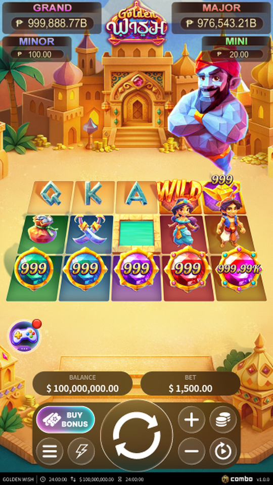
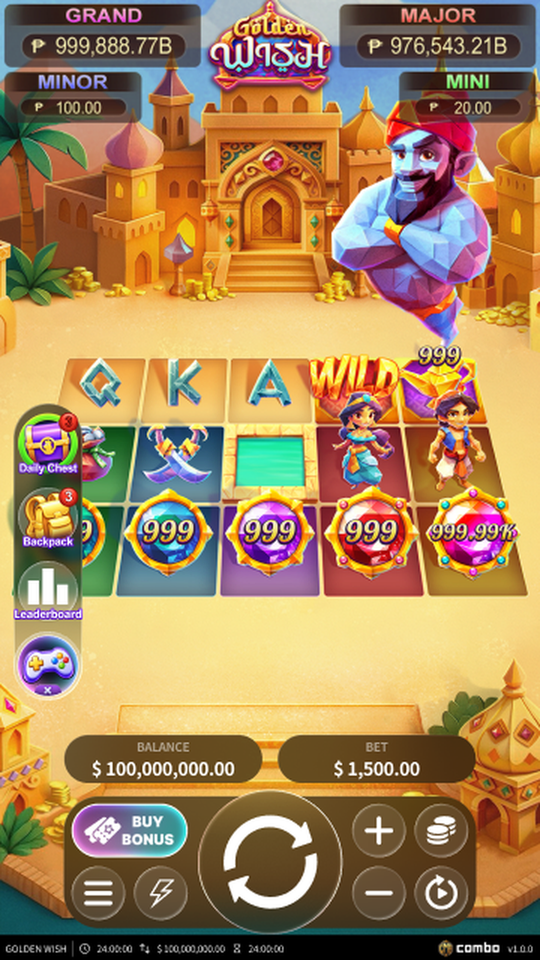
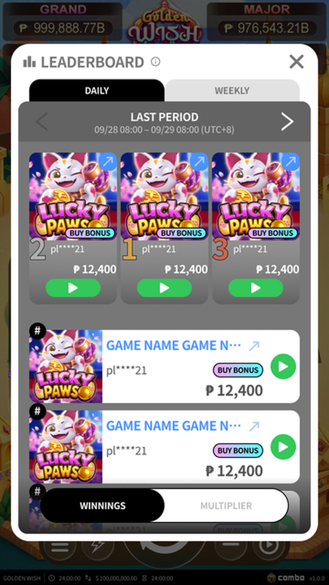
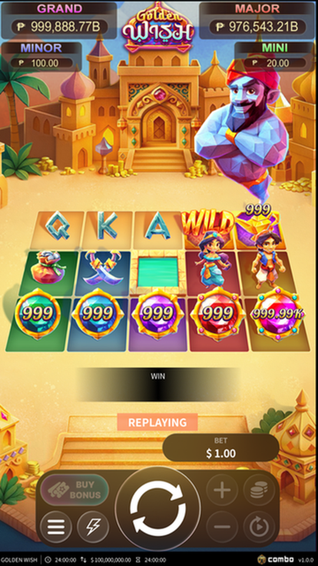
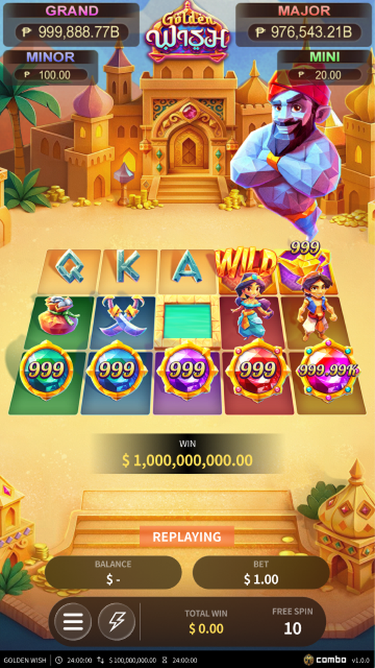
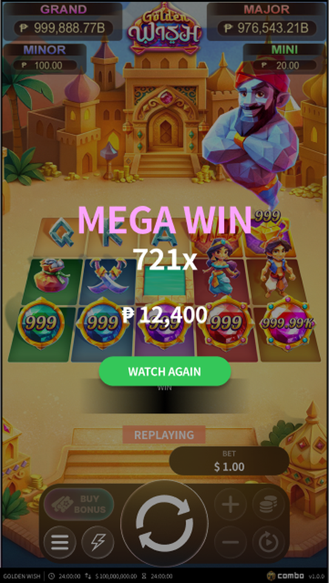
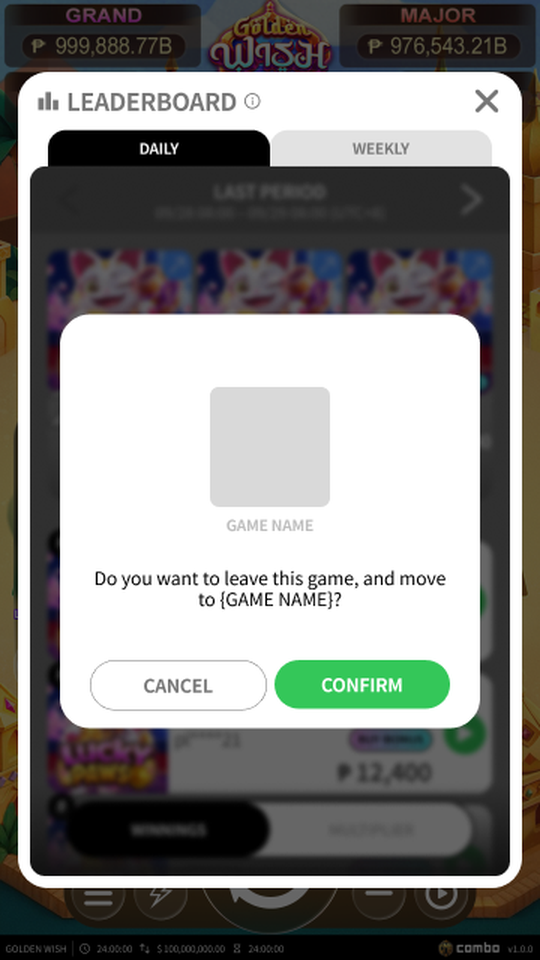
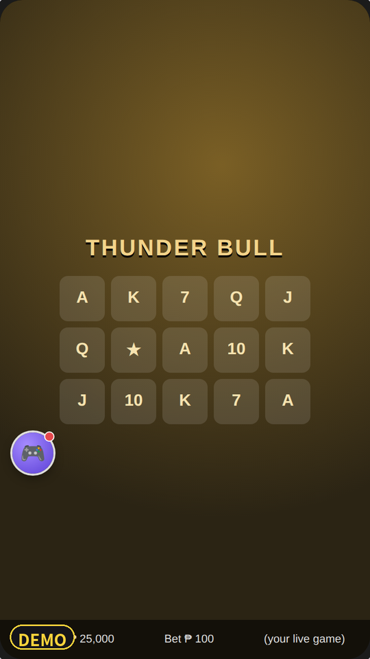
| 步驟 | 玩家動作 | 畫面反應 | 記錄事件 |
|---|---|---|---|
| ①② | 點 CRM 浮動 icon → 點「排行榜」 | 選單收起，榜單面板開啟，列表先顯示載入中 | E1 開啟榜單 |
| ③ | 切換日／週、‹ › 期間、贏分／倍數 | 其他選擇保持不變，列表回到頂部並重新讀取一次 | E2 切換榜型 · E3 切換期間 |
| ④ | 點某一筆的 ▶ 回放按鈕 | 以新分頁開啟回放，原分頁的遊戲與榜單維持原狀 | E4 點回放 |
| ⑤ | 按 SPIN | 遊戲端依紀錄重演整局，不跳過、不加速 | E5 已按 SPIN（遊戲端記錄） |
| ⑥ | 關閉回放分頁（任何時候都可以） | 回到榜單，榜型、期間、捲動位置都維持原狀，不重新讀取 | - |
| ③′ | 點前三名的遊戲圖片，或列表的縮圖、遊戲名稱 | 跳出切換遊戲確認視窗，顯示目標遊戲的圖片與名稱 | - |
| ③″ | 按「確定」／「取消」 | 確定：榜單關閉，以同一組 token 進入該款遊戲。取消：回到榜單原狀 | E7 從榜單進入遊戲（只在確定時） |
| ③‴ | 點的是目前所在的遊戲 | 改跳「已在該遊戲」提示，只有「關閉」；按下後回到榜單原狀，不切換遊戲 | 不記錄 |
| 層級 | 畫面 | 怎麼進來 | 怎麼離開 |
|---|---|---|---|
| L1 | 浮動 icon 選單 | 遊戲中點浮動 icon | 點浮動 icon（✕）或選單以外的區域 |
| L2 | 榜單 | 選單中點「排行榜」 | 點 ✕ 回遊戲；點遊戲圖片或名稱 → 確認視窗 → 確定，進入該款遊戲 |
| 新分頁 | 回放（見 回放） | 榜單上點 ▶ | 關閉回放分頁，回到原分頁的 L2；L2 維持原本的榜型、期間與捲動位置 |
每個區塊並排放直式（360 × 640）與橫式（640 × 360）參考畫面。兩個方向使用同一批元件、內容相同，編號也相同；只有擺放位置不同時，寫在表格的「直式 / 橫式」欄。
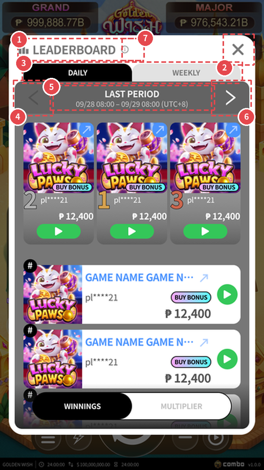
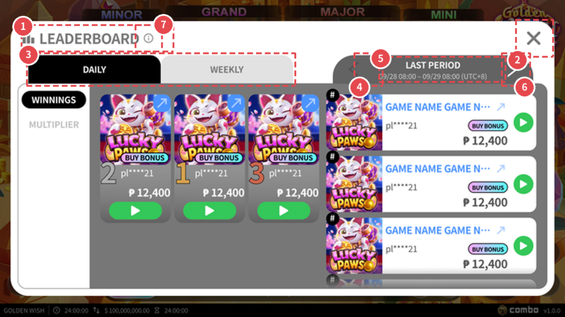
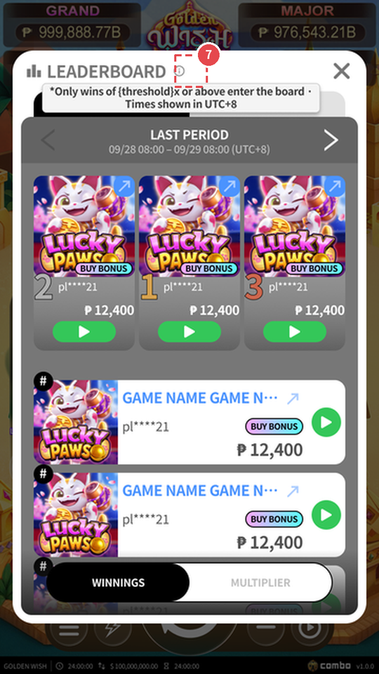
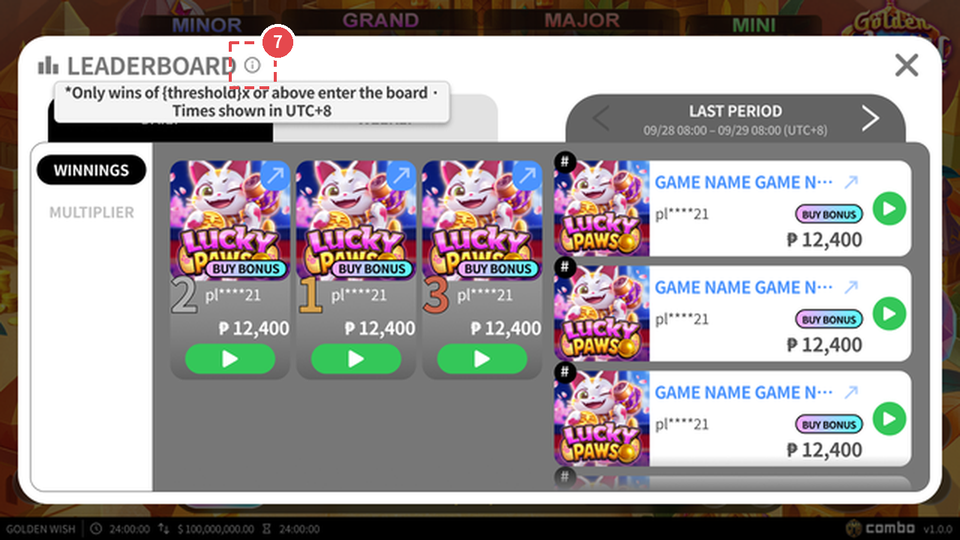
| # | 欄位 | 直式 / 橫式 | 狀態 | 說明 |
|---|---|---|---|---|
| 1 | 標題 | 相同 | - | 長條圖 icon 加「排行榜」（lb_title）。 |
| 2 | ✕ 關閉 | 相同 | - | 關閉榜單回到遊戲。 |
| 3 | 日榜 / 週榜 頁籤 | 直式：全寬 橫式：左側，與期間頁籤同一列 | 選中（黑底）未選（淺灰） | 預設日榜。切換時保留期間與贏分／倍數的選擇，列表回到頂部。載入中也可以切換，以最後一次選擇為準，先前的讀取結果捨棄；點目前已選的頁籤沒有反應。 |
| 4 | ‹ 上一期箭頭 | 相同 | 可點停用 | 在「進行中」時可點，回到上一期；在「上一期」時淡化停用。只有兩期，沒有更早的榜。 |
| 5 | 期間名稱與起訖 | 直式：頁籤下方全寬深灰列 橫式：右上獨立頁籤 | 上一期進行中 | 預設停在「上一期」。上一期顯示快照記錄的實際起訖（結算延後時不可用今天日期推算）；進行中顯示本期起點與預定結算時間。時間格式為 MM/DD HH:mm（24 小時制），例：10/14 08:00 – 10/15 08:00 (UTC+8)，一律標示 UTC+8。進行中的結束時間為預定結算時間；若結算延後，實際結束時間會晚於顯示，屬已知限制。文案 lb_tab_settled、lb_tab_live、lb_period。 |
| 6 | › 進行中箭頭 | 相同 | 可點停用 | 在「上一期」時可點，前往進行中；在「進行中」時淡化停用。 |
| 7 | ⓘ 規則說明 | 相同 | 收合顯示提示 | 接在標題右側。點擊後在標題下方顯示提示：「*達 {threshold} 倍以上才會進榜・時間為 UTC+8」（lb_rule_tip，門檻數字由 API 帶入）。再點一次 ⓘ 或點畫面任何地方才收起，不會自動消失；這一下只用來收起提示，不會同時觸發下方的按鈕。提示疊在頁籤上方，不推動版面。 |
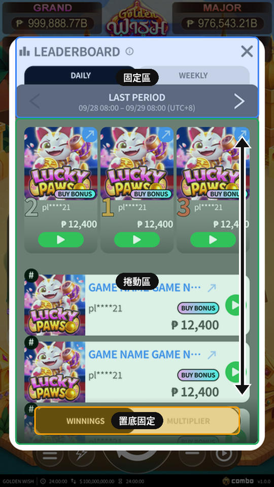
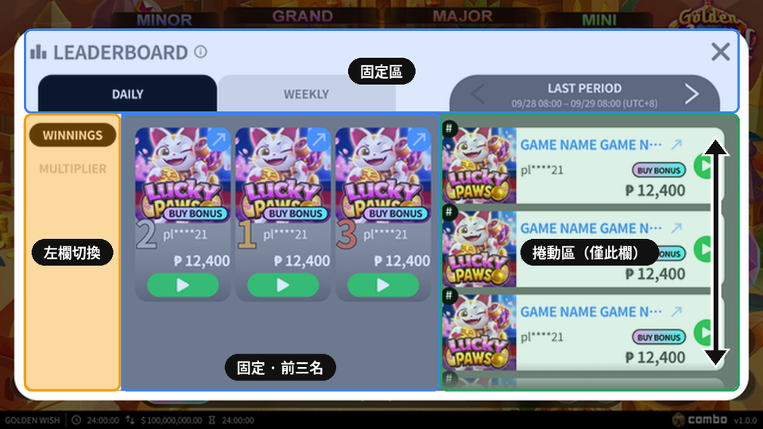
| 區域 | 包含 | 直式 / 橫式 | 狀態 | 說明 |
|---|---|---|---|---|
| 固定 | 標題、日週頁籤、期間切換 | 相同；橫式另含左欄與中欄 | - | 不隨列表捲動，玩家任何時候都看得到正在看哪張榜、哪段時間。 |
| 捲動 | 直式：前三名 → 第 4–20 名 橫式：第 4–20 名 | 直式：整段捲動 橫式：只有右欄捲動 | - | 門檻說明已移到標題旁的 ⓘ（見 02.2），不再佔用捲動區。切換榜型或期間時列表回到頂部；開啟回放再關閉時維持原捲動位置。停留期間不自動更新（含跨過結算時點、有新大獎開出時），下次切換或重開榜單才取新資料。原因：畫面在玩家眼前整份換掉比資料稍舊更糟，且後端不需承受輪詢流量。 |
| 切換 | 贏分 / 倍數 | 直式：置底浮動 橫式：左欄直排 | 贏分倍數 | 預設贏分，切換時保留日週與期間選擇。直式為黑白膠囊鈕浮在列表上方；列表底部要留出切換鈕的高度並加漸層，讓第 20 名的回放按鈕可以完整捲出來，不被蓋住。橫式放左欄：選中為黑底膠囊，未選為灰字。 |
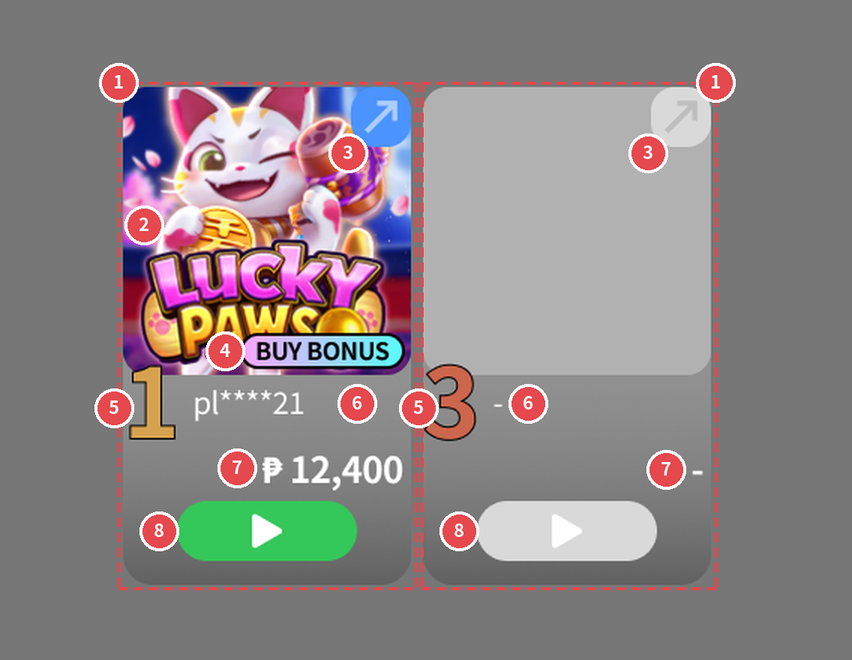
| # | 欄位 | 直式 / 橫式 | 狀態 | 說明 |
|---|---|---|---|---|
| 1 | 前三名卡片 | 相同 | 有資料空位 | 灰色漸層底，三張同尺寸，排序 2 · 1 · 3。名次只靠數字顏色區分，卡片底色相同。不足 3 名時空著的名次仍保留卡片（見 03.1）。 |
| 2 | 遊戲圖片 | 相同 | 可點已下架 | 方形，沿用各遊戲既有縮圖，讀不到時用預設圖。點擊跳出切換遊戲確認視窗（02.6）。已下架的遊戲圖片照常顯示，但不可點。 |
| 3 | ↗ 進入遊戲標示 | 相同 | 藍色灰色 | 圖片右上角的藍色方形 ↗，提示圖片可以點。已下架或空位時改為灰色。與圖片共用同一個點擊範圍。 |
| 4 | BUY BONUS | 相同 | 有 BUY無 | 壓在圖片右下角。該筆由 buy bonus 開出時才顯示，只做標示、不影響計分與排序。 |
| 5 | 名次數字 | 相同 | 1 金2 銀3 銅 | 大號數字壓在圖片左下緣。 |
| 6 | 遮罩 playID | 相同 | - | 遮去中段顯示（例 pl****21），接在名次數字右側。過長時文字縮小，不截斷，讓玩家認得出是不是自己。空位顯示「-」。 |
| 7 | 數值 | 相同 | 贏分榜倍數榜 | 看哪張榜就只顯示那個數字：贏分榜顯示金額（帶該筆的幣別符號），倍數榜顯示倍數。格式：金額為幣別符號、空格、千分位、小數 2 位（例 ₱ 360,500.00）；倍數為千分位、小數 2 位、後接 x（例 1,254.37x）。靠右。空位顯示「-」。數值過長、放不下時改為跑馬燈：先停留，再向左捲動到顯示出結尾，停留後捲回開頭，循環播放；放得下時照常靠右、不捲動。不截斷、不縮寫。 |
| 8 | 回放按鈕 | 相同 | 可點無網址 | 綠色膠囊，內含 ▶。後端有隨榜單回傳該筆回放網址才可點；沒有網址時改為灰色、不可點，位置保留。 |
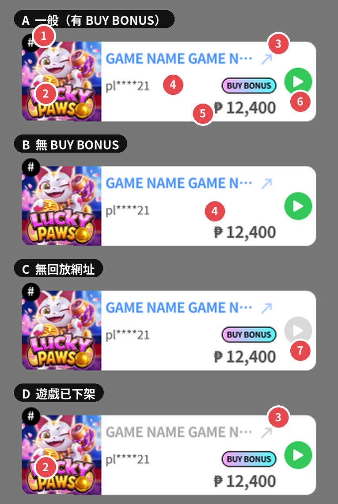
| # | 欄位 | 直式 / 橫式 | 狀態 | 說明 |
|---|---|---|---|---|
| 1 | 名次 | 相同 | - | 黑色圓形徽章，壓在列的左上角並略為超出。第 4 到 20 名；第 20 名之後不顯示，也不提供「載入更多」。列高固定，內容多寡不改變列高；整區不得產生橫向捲軸。 |
| 2 | 遊戲縮圖 | 相同 | 可點已下架 | 點擊跳出切換遊戲確認視窗，與遊戲名稱相同，和前三名的遊戲圖片一致。已下架不可點。 |
| 3 | 遊戲名稱 ↗ | 相同 | 可點已下架 | 藍字加淺藍 ↗，點擊跳出確認視窗。過長時單行截斷「…」，不換行；欄寬不夠時優先截斷遊戲名稱，不截斷數字。已下架：灰字、灰色 ↗、不可點。 |
| 4 | 遮罩 playID 與 BUY BONUS | 相同 | 有 BUY無 | 同一行：playID 靠左，BUY BONUS 靠右。 |
| 5 | 數值 | 相同 | 贏分榜倍數榜 | 同前三名卡片，靠右、粗體；過長時同樣改為跑馬燈。 |
| 6 | 回放按鈕 | 相同 | - | 綠色圓形，內含 ▶。 |
| 7 | 無回放網址 | 相同 | - | 同一位置改為灰色 ▶、不可點，不顯示錯誤訊息。該筆仍正常進榜。 |
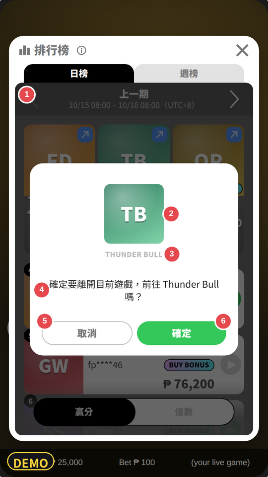
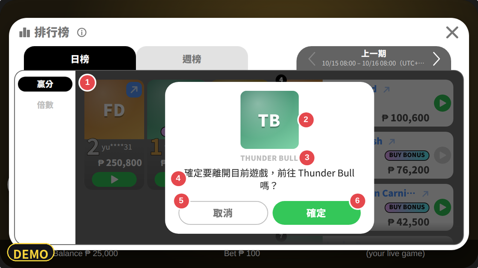
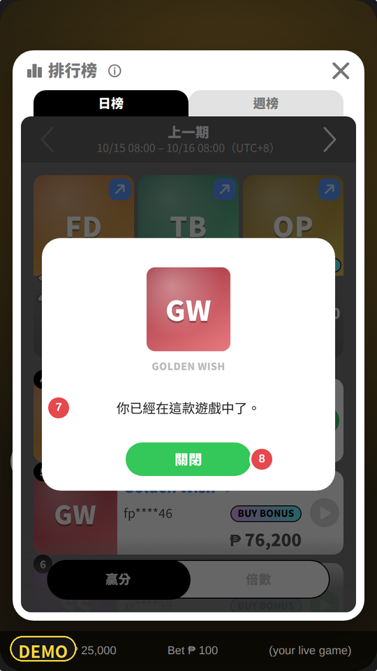
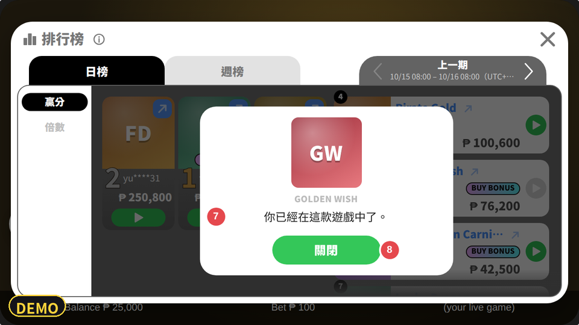
| # | 欄位 | 直式 / 橫式 | 狀態 | 說明 |
|---|---|---|---|---|
| 1 | 遮罩 | 直式：蓋住期間列與贏分／倍數切換 橫式：左欄與期間箭頭不被蓋住 | - | 暗化內容區；點遮罩視同取消（關閉視窗，回到榜單原狀）。視窗開啟時：點標題的 ✕ 直接關閉整個榜單；點日週頁籤（橫式另含左欄與期間箭頭）會關閉視窗並直接切換榜單。 |
| 2 | 目標遊戲圖片 | 相同 | - | 與榜上同一張縮圖，讓玩家確認要去哪一款；前三名卡片本身沒有遊戲名稱，這裡是第一次看到名稱的地方。 |
| 3 | 遊戲名稱 | 相同 | - | 灰色小字，過長單行截斷。 |
| 4 | 確認文字 | 相同 | - | 「確定要離開目前遊戲，前往 {game} 嗎？」 |
| 5 | 取消 | 相同 | - | 關閉視窗，回到榜單原狀（榜型、期間、捲動位置不變）。 |
| 6 | 確定 | 相同 | - | 關閉視窗，進入該款遊戲。 |
| 7 | 已在該遊戲提示 | 相同 | - | 點的遊戲就是玩家目前所在的遊戲時，改顯示這個視窗：「You are already in this game.」，只有「關閉」一個按鈕。 |
| 8 | 關閉（已在該遊戲） | 相同 | - | 關閉視窗，回到榜單原狀（榜型、期間、捲動位置不變），不切換遊戲。文案沿用 lb_close。 |
正常畫面以外的每一種狀態：誰觸發、畫面顯示什麼、玩家可以做什麼。回放的狀態見 回放 06。
固定區（標題、頁籤、期間切換）與贏分／倍數切換在所有狀態下都照常顯示，讓玩家知道自己選了什麼。變化在直式發生在捲動區；在橫式發生在左欄以外的灰色區域。
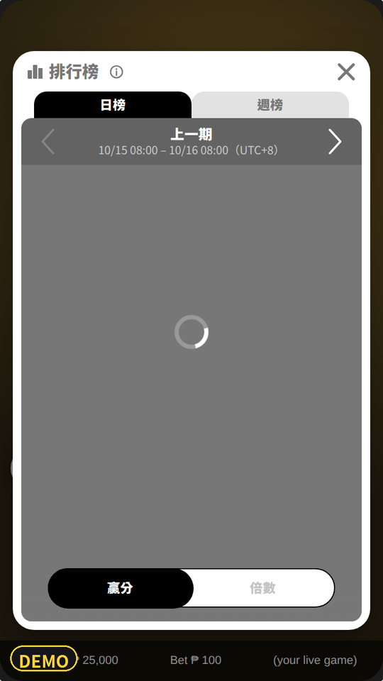
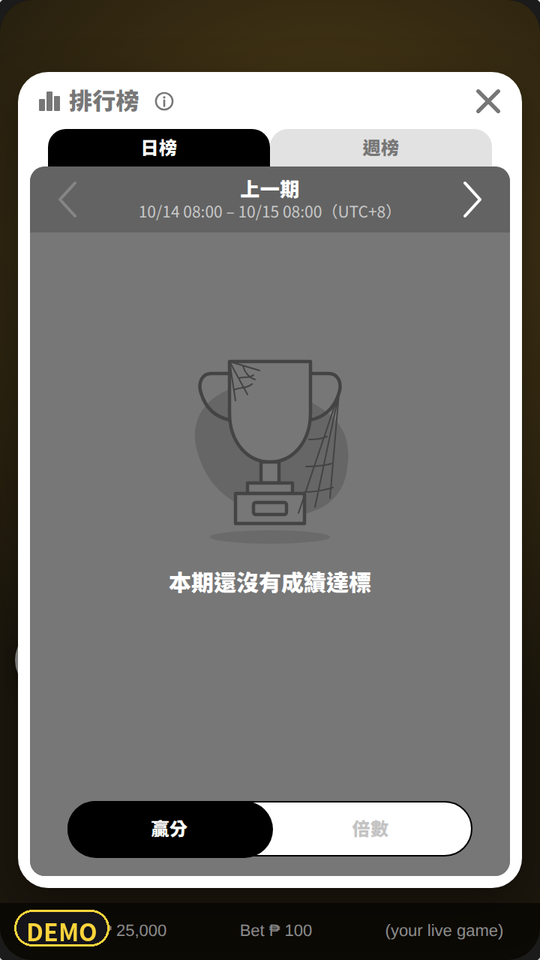
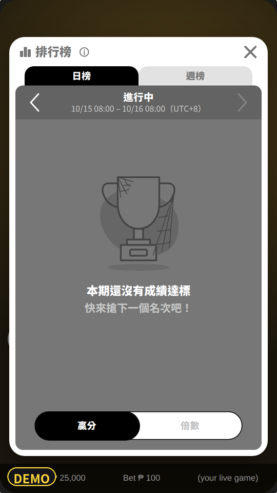
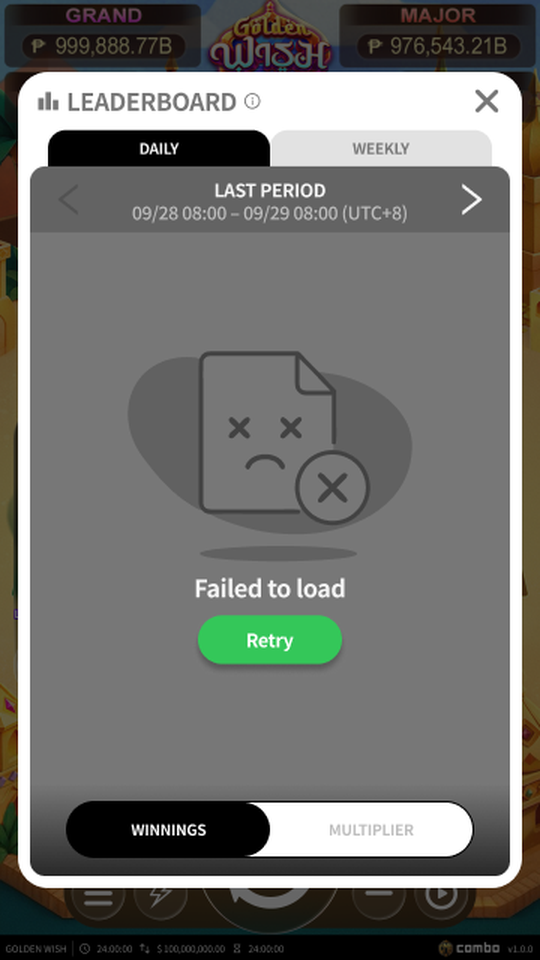
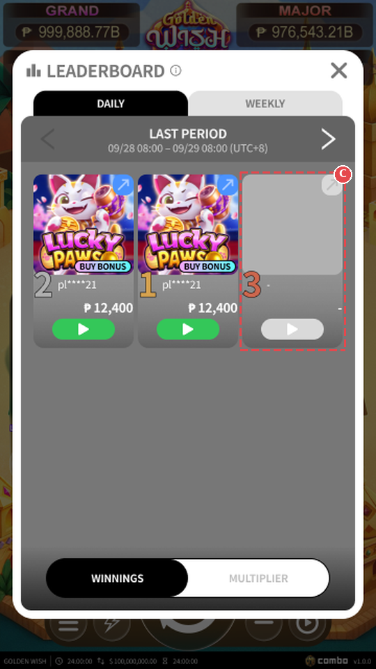
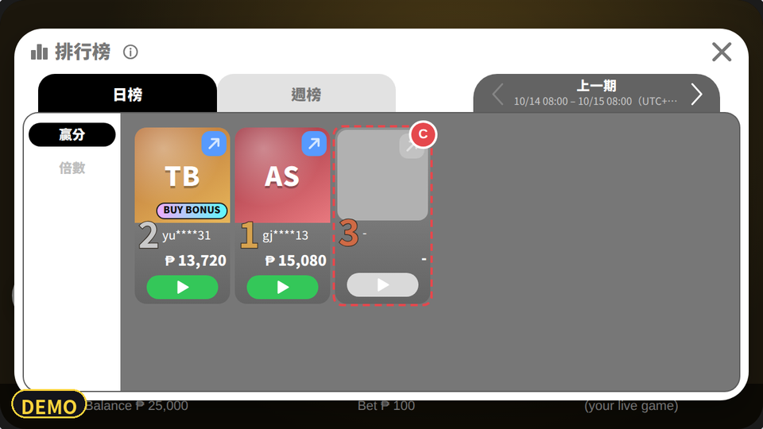
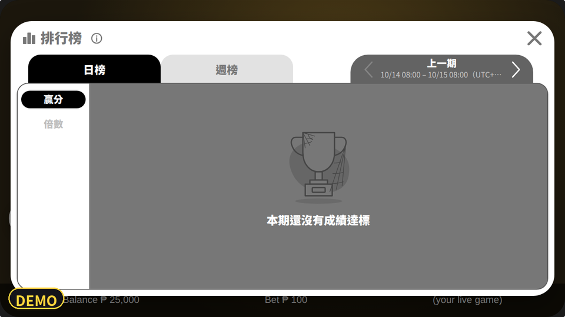
| 狀態 | 何時出現 | 畫面 | 玩家可以做什麼 |
|---|---|---|---|
| 載入中 | 開啟榜單、切換頁籤或期間、切換贏分／倍數後，資料尚未回來 | 顯示載入指示（沿用 CRM 既有載入動畫）。 | 可關閉、可切換其他選項（以最後一次選擇為準）。 |
| 空榜 · 上一期 | 該榜期沒有任何成績達到門檻 | 空榜插圖（獎盃）與 lb_empty「本期還沒有成績達標」。 | 切換到其他榜或期間。 |
| 空榜 · 進行中 | 同上，查看的是進行中 | 同上，並在下方多一行「快來搶下一個名次吧！」。只在進行中顯示：上一期已結束，不再邀請玩家上榜。 | 同上。 |
| 載入失敗 | 後端沒有回應或回傳錯誤 | 載入失敗插圖、「載入失敗」與綠色「重試」按鈕（lb_retry）。不顯示錯誤代碼（代碼只記錄在 E8，供客服追查）。 | 重試、切換、關閉。不自動無限重試。記錄 E8。 |
| 不足 3 名 | 達標筆數只有 1 或 2 筆 | 空著的名次顯示空位卡：灰色圖片區、灰色 ↗、名次數字，playID 與數值顯示「-」，回放按鈕為灰色；整張不可點。直式下方沒有列表；橫式右欄留空，不放佔位列、不放說明文字。 | - |
| 已關閉 | 該「專線 × 幣別」關閉排行榜 | 不會進到這個畫面：浮動選單中不出現「排行榜」。 | - |
有多種狀態的元件彙整，方便美術一次出齊所有狀態。
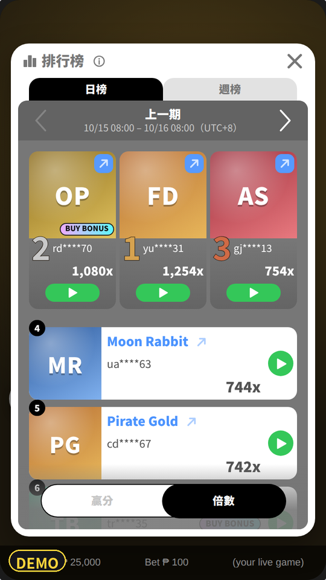
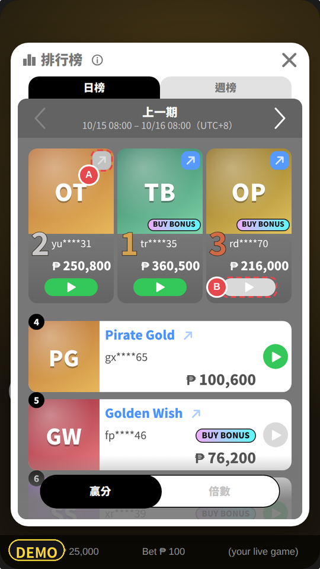
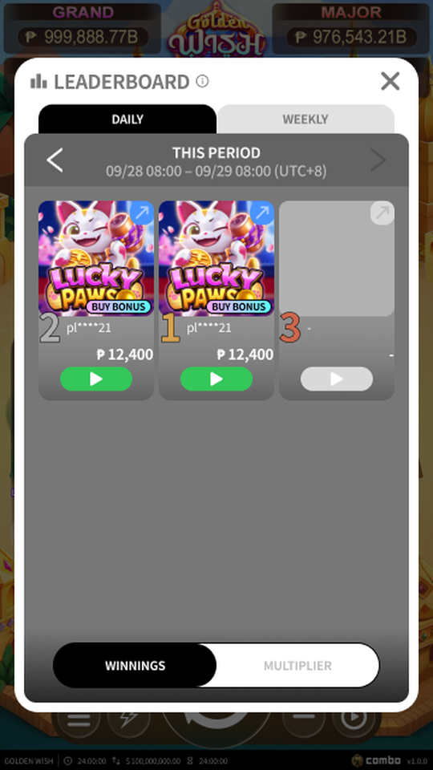
| 元件 | 狀態 |
|---|---|
| CRM 浮動 icon | 收合（紅點）展開（✕） |
| 浮動選單「排行榜」 | 顯示不渲染（該專線 × 幣別關閉） |
| 日榜 / 週榜 頁籤 | 選中（黑底）未選（淺灰） |
| ⓘ 規則說明 | 收合顯示提示（再點 ⓘ 或點任何地方收起） |
| 期間箭頭 ‹ › | 可點停用（淡化） |
| 期間名稱 | 上一期 · 實際起訖進行中 · 起點與預定結算 |
| 贏分 / 倍數切換 | 選中未選 |
| 數值 | 贏分：₱ 360,500.00倍數：862.35x空位：「-」回放結算（遊戲端）：倍數與贏分 |
| 遊戲圖片 / 縮圖 | 可點（開確認視窗）已下架（照常顯示、不可點）空位（灰色區塊） |
| ↗ 標示 | 藍色灰色（已下架、空位） |
| 遊戲名稱（列表） | 可點（藍字 ↗）已下架（灰字、灰 ↗、不可點） |
| 回放按鈕 | 可點（綠色）無網址（灰色、不可點）空位（灰色） |
| BUY BONUS 標籤 | 顯示不顯示 |
| 前三名卡片 | 有資料空位卡0 筆 → 空榜 |
| 切換遊戲確認視窗 | 開啟取消 → 回榜單確定 → 進入遊戲（E7）已在該遊戲 → 只有關閉，回榜單 |
| 回放 SPIN（遊戲端） | 待按播放中結算 · 可重看 |
| WATCH AGAIN（遊戲端） | 結算後顯示點擊 → 回到待按 SPIN |
| 回放模式的遊戲控制 | SPIN 可點Buy Bonus、押注 ±、籌碼、自動：停用餘額：直式不顯示、橫式顯示「-」 |
回放畫面的美術除 WATCH AGAIN 按鈕（lb_15）外，由遊戲端負責。
| 編號 | 資產 | 用在哪 | 數量 | 備註 |
|---|---|---|---|---|
lb_01 | 排行榜選單 icon | 02.1 選單項目 | 1 | 沿用CRM風格 |
lb_02 | 名次數字（1／2／3） | 02.4 前三名卡片 | 3 | 主要分辨出單個不同名次的差別 |
lb_03 | 前三名卡片底板 | 02.4 | 1 | 灰色漸層，三個名次共用；空位卡用同一底板（灰色圖片區、灰色 ↗）。 |
lb_04 | 遊戲縮圖預設圖 | 02.4、02.5、02.6 | 1 | 遊戲圖讀不到時的替代圖。各款遊戲本身的縮圖沿用既有資產、不重做。 |
lb_05 | 回放按鈕 ▶ | 02.4、02.5 | 2 態 | 可點、不可點 |
lb_06 | BUY BONUS 標籤 | 02.4、02.5 | 1 | 顯示玩家是用BUY BONUS的標籤 |
lb_07 | 空榜插圖 | 03.1 空榜 | 1 | 顯示無資料的狀態 |
lb_08 | 載入指示 | 03.1 載入中 | 1 | 可沿用既有 CRM 載入動畫，不另做。 |
lb_09 | ↗ 進入遊戲標示 | 02.4、02.5 | 2 態 | 可點、不可點 |
lb_10 | ⓘ 規則說明 icon | 02.2 | 1 | 接在標題右側。 |
lb_11 | 載入失敗插圖 | 03.1 載入失敗 | 1 | 顯示載入失敗的狀態 |
lb_12 | 期間箭頭 ‹ › | 02.2 ④⑥ | 2 態 | 可點、不可點 |
lb_13 | 名次徽章（列表） | 02.5 ① | 1 | 顯示4-20排名的示意 |
lb_14 | 排行榜的icon | 02.2 ① | 1 | 接在標題左側。 |
lb_15 | WATCH AGAIN 按鈕 | 回放 05 ⑨ | 1 | 回放結算後顯示，點擊重看。 |
| 項目 | 規則 |
|---|---|
| 入口 | 榜單上前三名卡片與列表的 ▶ 回放按鈕。按鈕只看一件事：後端有沒有隨榜單回傳該筆的回放網址。沒有網址的筆，按鈕改為灰色、不可點，位置保留。 |
| 網址來源 | 後端回傳榜單時每筆直接附上已驗證的回放網址；前端不另外呼叫、不自己組網址。 |
| 開啟方式 | 以瀏覽器新分頁開啟回放網址；載入、盤面演出與錯誤畫面全部在該網址內完成。CRM 不在回放分頁上加任何畫面。 |
| token | 沿用玩家當前工作階段的同一組 token，不另外要求登入。 |
| 原分頁 | 遊戲與榜單留在原分頁，維持原狀、不鎖定。 |
| 關閉 | 玩家自行關閉回放分頁，回到原分頁的榜單。榜單的榜型、期間與捲動位置全部維持原狀，不重新載入。 |
| 重看 | 結算後的 WATCH AGAIN，由回放網址內自行提供，次數不限。 |
| 範圍限制 | 只能回放自己專線、自己幣別的局。防線在後端簽發回放網址這一步：只對同專線同幣別的筆簽發；收到跨專線／跨幣別的簽發請求一律拒絕並記 E12。 |
| 遊戲已下架 | 下架本身不改變任何事——按鈕仍然只看後端有沒有回傳回放網址：回得出網址就照常可點、照常可播；回不出就顯示灰色 ▶。 |
| 不快轉 | CRM 不介入盤面演出邏輯、不控制播放；不提供快轉、跳過或倍速——會破壞「完整看獲獎流程」的目的。 |
這條線要先講清楚，否則兩邊都以為對方會做。
| 誰做 | 負責範圍 |
|---|---|
CRM（本功能）🎮 前端 | ① 榜單上的 ▶ 回放按鈕（沒有回放網址時為灰色、不可點） ② 點 ▶ 時以新分頁開啟後端回傳的回放網址、帶 token ③ 事件記錄（E4 點 replay） |
遊戲端🛠 遊戲端 | ① 回放網址本身，含載入中畫面 ② 盤面重演（含 Free Game 逐局、連鎖、乘數變化與音效） ③ SPIN 按鈕、結算畫面、WATCH AGAIN ④ 回放模式下的遊戲控制：隱藏餘額、押注只顯示不可調，Buy Bonus、± 、籌碼、自動停用 ⑤ 回放標示（見 回放 03） ⑥ 回放頁載入失敗、讀不到該局資料、播放中斷線時的錯誤訊息與錯誤代碼（都在回放網址內顯示） ⑦ 玩家按下 SPIN 時記錄 E5（只有這一個時點，不記其他播放階段） |
後端🛠 後端 | 提供榜單資料時，每筆一併帶出該局識別碼與已驗證的回放網址（給不出網址的筆留空）；簽發網址前比對請求者與該局的專線、幣別，不符一律拒絕並記 E12。 |
| 項目 | 規則 |
|---|---|
| 誰做 | 遊戲端，做在回放網址的畫面內。 |
| 內容 | 顯示這是回放畫面的標示，以英文呈現（不做多語系）。Figma 用字為「REPLAYING」。 |
| 位置 | 放在顯眼的地方，讓玩家一眼看得到。 |
| 持續時間 | 從進入到離開全程顯示，包含盤面轉動與特色玩法演出期間。不可只在開頭出現後淡出——玩家中途才看過來時就看不到了。 |
| 不動餘額 | 回放不扣款、不派獎、不產生任何注單，也不顯示玩家自己的餘額（直式整格不顯示；橫式保留欄位、數值顯示「-」）。 |
| 不顯示餘額變化 | 回放畫面不呈現押注前後的資產變化。（提案 V1.6 波2.5 曾列此項，本規格書取消——顯示金額增減正是最容易被誤會成自己中獎的元素。） |
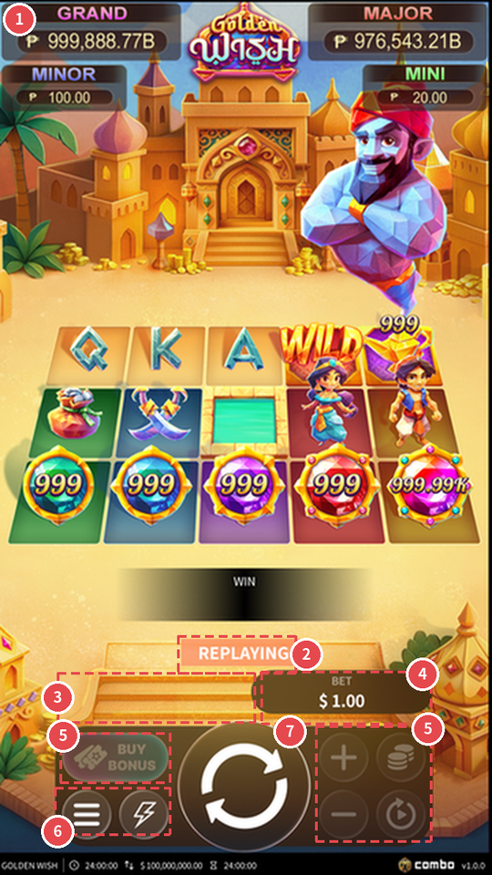
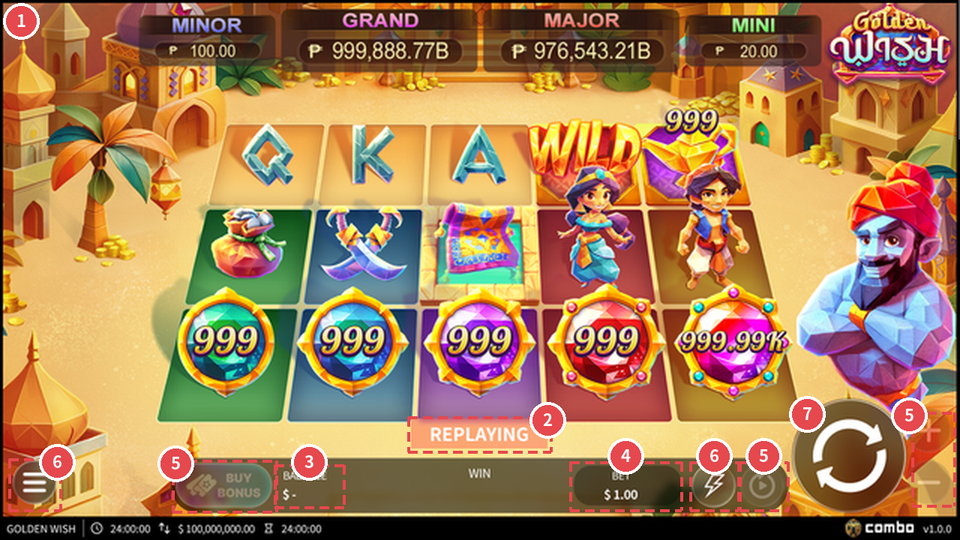
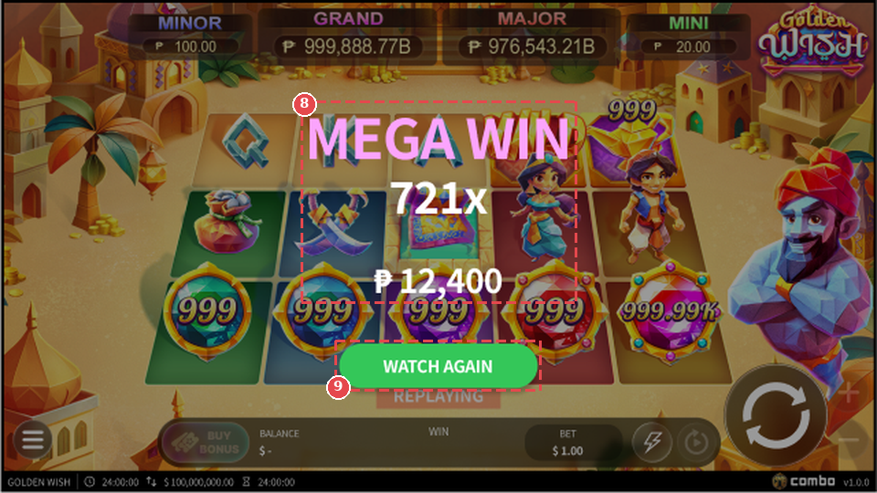
| # | 欄位 | 直式 / 橫式 | 狀態 | 說明 |
|---|---|---|---|---|
| 1 | 全螢幕回放 | 相同 | - | 點 ▶ 後以新分頁開啟該款遊戲的回放，畫面與一般遊戲相同、全螢幕播放，沒有 CRM 資訊列與浮動 icon。原分頁的遊戲與榜單維持原狀。 |
| 2 | REPLAYING 標示 | 直式：押注上方、畫面中段 橫式：底部操作列正上方、置中 | - | 從進入到離開全程顯示。英文，遊戲端負責。 |
| 3 | 餘額 | 直式：整格不顯示 橫式：保留欄位，數值顯示「-」 | - | 回放模式不顯示玩家餘額。 |
| 4 | 押注（BET） | 相同 | - | 顯示該局原本的押注，不可調整。 |
| 5 | 停用的控制 | 直式：SPIN 兩側 橫式：Buy Bonus 左下、自動在 ⚡ 右側、± 在最右 | 停用（淡化） | Buy Bonus、押注 + / −、籌碼、自動轉動皆淡化、不可點。 |
| 6 | ☰ 選單、⚡ 加速 | 直式：左下 橫式：☰ 左下、⚡ 押注右側 | - | Figma 中仍為可點樣式。 |
| 7 | SPIN | 直式：底部置中 橫式：右下 | 待按播放中 | 唯一可用的遊戲按鈕。不自動開始，要玩家自己按；按下時由遊戲端記錄 E5。依紀錄重演整局，不跳過、不加速。 |
| 8 | 結算畫面 | 相同 | - | 沿用遊戲既有的大獎演出，只顯示倍數與贏分，不得出現「入帳、獲得、恭喜你贏得」等字眼。 |
| 9 | WATCH AGAIN | 相同 | - | 演出結束後出現。點擊後回到待按 SPIN 的起始盤面，不自動開始；次數不限。 |
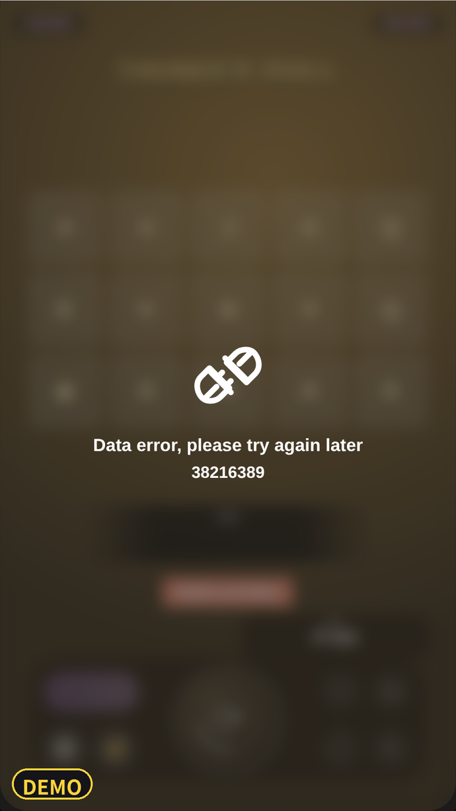
| 狀態 | 誰顯示 | 畫面 | 備註 |
|---|---|---|---|
| 載入中 | 遊戲端 | 遊戲端的載入畫面。 | - |
| 待按 SPIN | 遊戲端 | 起始盤面，REPLAYING 標示顯示中，只有 SPIN 可按。 | 不自動開始。 |
| 播放中 | 遊戲端 | 依紀錄重演，含 Free Game 逐局、乘數與音效。 | 不跳過、不加速。Demo 為了示範已壓縮時間。 |
| 結算 | 遊戲端 | 倍數與贏分，下方 WATCH AGAIN。 | WATCH AGAIN 回到待按 SPIN，次數不限。 |
| 載入失敗 / 讀不到該局 / 中斷線 | 遊戲端 | 盤面模糊，斷線插圖、遊戲既有錯誤訊息與錯誤代碼。 | 玩家自行關閉分頁。 |
| 狀況 | 誰顯示 | 系統怎麼做 | 玩家看到什麼 |
|---|---|---|---|
| 該筆沒有回放網址 | — | 後端回傳榜單時該筆的回放網址為空。該筆仍正常進榜、名次不受影響。 | 前三名卡片與列表的 ▶ 改為灰色、不可點，位置保留。不顯示任何錯誤訊息。 |
| 回放頁載入失敗 | 遊戲端 | 由遊戲端在回放分頁內顯示；CRM 不介入。 | 遊戲端的錯誤畫面；玩家自行關閉分頁。 |
| 讀不到該局資料 | 遊戲端 | 回放網址內顯示錯誤，沿用遊戲端現有的錯誤訊息（如「資料錯誤，請稍後重試」）並顯示錯誤代碼。 | 盤面模糊，看到遊戲既有的錯誤訊息與代碼；玩家自行關閉分頁。 |
| 播放中斷線 | 遊戲端 | 回放沒有任何金額後果，斷線不需要任何補償或狀態還原。遊戲端在回放網址內顯示其既有的斷線畫面；回放分頁不自動關閉、CRM 不介入。 | 看到遊戲端的斷線畫面；玩家自行關閉分頁回到榜單，可再點一次 ▶ 重看。 |
| 播放中玩家關閉分頁 | — | 直接結束。不記錄中離事件（v1 只記點 replay 與是否按 SPIN）。 | 回到原分頁的榜單，榜型、期間與捲動位置維持原狀。 |
| Free Game 太長 | — | 不截斷、不加速，完整演完。 | 隨時可關閉分頁離開。 |
| 要求簽發其他專線或其他幣別的局的回放網址 | 後端 | 後端拒絕簽發，不回傳任何該局資料，並記錄 E12。正常操作下不會發生（榜單本來就只有自己專線幣別的筆），發生即代表有人繞過前端。 | 與「讀不到該局資料」相同的錯誤畫面。不得提示「這是其他專線的資料」——那等於洩漏了它存在。 |
| 該局所屬的遊戲已下架 | — | 成績留在榜上。replay 一律只看後端有沒有回傳回放網址，下架本身不改變任何事。 | 有網址就正常可點、正常播放；沒網址就顯示灰色 ▶。但遊戲圖片與名稱不可點、↗ 改為灰色（跳過去也沒有那款遊戲了）。 |
| 參數 | 型別 | 值 | 說明 |
|---|---|---|---|
| leaderboard_enabled | 是／否 | 是 | 排行榜總開關。關閉時所有專線的 L1 選單都不出現「排行榜」項目。 |
| board_enabled[線路代碼][幣別] | 是／否 | 預設否 | 逐「線路代碼 × 幣別」個別開關，以注單上的線路代碼查表，專線與共線都查同一張表；共線代碼因從未開啟，查到一律為否。與榜的分界完全一致。例：可以只開 PB10 × PHP，不開 PB10 × BDT。預設為否——沒有被明確開啟的組合一律不開榜，避免共線被誤開。 |
| threshold | 數字（倍數） | 50 | 進榜門檻。四張榜（日／週 × 倍數／贏分）共用同一個值，不分日週設定。 |
| top_n | 整數 | 20（v1 寫死） | 每張榜取前幾名。v1 固定 20、不可調；調整屬改版（榜單畫面 02.5「第 20 名之後」需連動）。 |
| snapshot_keep | 整數（期） | 1 | 已結算快照保留期數。只留上一期，新快照寫成時覆蓋前一份。 |
| hero_count | 整數 | 3（v1 寫死） | 用英雄卡呈現的名次數。v1 固定 3、不可調；調整屬改版（lb_02 名次數字與 榜單畫面 02.4 版面需連動）。 |
| 改了這個參數 | 何時生效 | 對既有資料的影響 |
|---|---|---|
| threshold | 下一筆注單起套用 | 不回溯。已進榜的舊成績不會因門檻調高而被移除；已結算的快照一律不重算。 |
| board_enabled → 關閉 | 立即 | 該「專線 × 幣別」停止寫入新成績、停止結算；既有快照保留不刪。重新開啟時：進行中榜的榜期若已過期，先清空、不補做結算、不寫快照，從開啟當下所屬榜期重新累積；上一期頁籤維持關閉前最後一份快照。其他組合不受影響。 |
| leaderboard_enabled → 關閉 | 立即 | 同上，範圍為全部專線。 |
| 風險 | 會發生什麼 | 目前的處理 |
|---|---|---|
| 只留一期快照，v2 發獎會沒有依據 | v2 要依榜單發獎時，只查得到最近一期；玩家對名次有爭議也回溯不了。 | v1 不發獎，故現在不痛。 但 snapshot_keep 必須在v2 發獎開發之前先調大，否則會在要發獎那天才發現沒有資料。此項已記為 v2 的前置條件。 |
| 沒有後台，營運不能自助改值 | 營運要調門檻或開關時，得走 Server 端，不能自己在後台按。 | 本版接受。門檻預期改動頻率低（上線後第二週校準一次，之後穩定），不值得為此先做一個後台。 |
| 門檻設錯的影響 | 門檻設太高會讓榜長期空著、設太低會讓榜上都是小獎。 | 上線後第一次檢視安排在第二週，依 E10 記錄的實際進榜筆數校準。因為 Server 可改，調整不需等發版。 |
| 參數散落在程式裡 | 門檻值若被寫進多處（後端篩選、前端文案），改一處漏一處會造成顯示與實際不一致。 | 門檻值只有一個來源：Server 端設定。前端文案的門檻數字由 API 帶下來，嚴禁在前端另外寫死一份。 |
| 共線被誤開 | 若把 AWS101 這類共線開起來，榜上會混進多個站台的玩家，違反本功能的分界原則。 | board_enabled 預設為否，必須逐一明確開啟。開啟前需確認該線路確為專線（見 規則 03.2）。 |
事件記錄是本功能唯一的成效量測來源，也是校準進榜門檻的依據。每一條都有明確用途，沒有「先記起來以後再說」的項目。
| 事件 | 職能 | 記錄內容與用途 |
|---|---|---|
| E1 · 開啟榜單 | 🎮 前端 | 玩家從 L1 選單進入 L2。記錄：來源遊戲、專線、幣別、時間。用途：算榜單開啟率，判斷入口位置有沒有效。 |
| E2 · 切換榜型 | 🎮 前端 | 切換日／週或贏分／倍數。記錄：切換前後的榜型。用途：看玩家實際偏好哪張榜，決定日後預設值要不要改。 |
| E3 · 切換期間 | 🎮 前端 | 以 ‹ › 切換「上一期」與「進行中」。記錄：切換後的頁籤。用途：驗證「預設看上一期」是不是對的選擇。 |
| E4 · 點 replay | 🎮 前端 | 記錄：該筆的名次、來自前三名卡片或列表、遊戲、倍數、贏分。用途：算回放點擊率，並比較前三名卡片與列表的效果差異。 |
| E5 · 已按 SPIN | 🛠 遊戲端 | 遊戲端在玩家於回放分頁按下 SPIN 時記錄。記錄：該局識別碼。用途：算「點了 replay 之後真的按下 SPIN」的比例——只進回放沒按 SPIN 代表玩家看不懂要做什麼。播完與中離階段不記（v1 不要求遊戲端記錄其他階段）。 |
| E6 · （已刪除，留空號） | — | V1.2 刪除原「回放中離」事件，編號保留不重排，以免 E7～E12 在其他章節的引用失效。 |
| E7 · 從榜單進入遊戲 | 🎮 前端 | 玩家在切換遊戲確認視窗按「確定」跳轉（點遊戲圖片或名稱都會先跳確認；點的是目前所在的遊戲時不記錄）。記錄：來源遊戲、目標遊戲、該筆名次、從哪裡點的（三選一：top3 image 前三名遊戲圖片／row image 列表縮圖／row name 列表遊戲名稱）。用途：這是導流效果的唯一證據，也是「用排行榜推廣其他遊戲」成不成立的判準。 |
| E8 · 榜單載入失敗 | 🎮 前端 | 榜單資料載入失敗（開啟榜單、切換榜型或期間、按重試時都算）。記錄：失敗原因、錯誤代碼、當時選的榜型。用途：監控穩定度；客服接到反應時可依代碼追查。 |
| 事件 | 職能 | 記錄內容與用途 |
|---|---|---|
| E9 · 一筆成績進榜 | 🛠 後端 | 一筆注單通過門檻並寫入榜單。記錄：專線、幣別、遊戲、playID、局型（一般／Free Game／buy bonus 三選一，只要是買來的就記 buy bonus，「Free Game」只用於自然觸發）、倍數、贏分、該局識別碼、是否有回放網址。用途：門檻校準、局型分佈分析。 |
| E10 · 榜期結算完成 | 🛠 後端 | 快照寫成。記錄：專線、幣別、榜型、榜期起訖、實際進榜筆數、當時套用的門檻值。用途：這是校準門檻的主要依據——筆數長期不到 20 就該調降，長期爆滿就該調升。 |
| E11 · 結算失敗 | 🛠 後端 | 快照寫入失敗。記錄：專線、幣別、榜型、失敗原因、重試次數。用途：告警。此事件觸發時舊快照必須仍在、進行中榜必須未被清空（見 規則 03.8）。 |
| E12 · 回放請求被拒 | 🛠 後端 | 收到跨專線或跨幣別的回放網址簽發請求而拒絕。記錄：請求者、被請求的局、錯誤代碼。用途：這是資料邊界有沒有被繞過的唯一偵測點，不可省略。 |
| 想知道的事 | 用哪些事件 | 怎麼算 |
|---|---|---|
| 榜單有沒有人看 | E1 | 開啟榜單人數 ÷ 該專線該幣別的活躍玩家數。 |
| 回放有沒有人點 | E4 ÷ E1 | 點過 replay 的人數佔開啟榜單人數的比例。 |
| 回放有沒有真的看 | E5 ÷ E4 | 按 SPIN 率：點了 replay 的人有多少真的按下 SPIN。偏低代表回放畫面讓玩家不知道要做什麼。完播率 v1 不量。 |
| 導流有沒有效 | E7 ÷ E1 | 從榜單點進其他遊戲的比例。 |
| 門檻設得對不對 | E10 | 看各榜期的實際進榜筆數分佈。上線後第二週做第一次校準。 |
| buy bonus 有沒有霸榜 | E9 | 看倍數榜前段的局型分佈中 buy bonus 佔多少。 |
本功能的文案 key 一律以 lb_ 為前綴，與抽寶箱的 tb_／crm_／fab_ 分屬不同命名，不可混用。使用中 20 條（沿用 4、改寫 10、新增 6；改寫中有 6 條只把英文改為大寫，與畫面一致，其他語系不需重譯）× 14 語系。開發版中畫面已不再使用的 6 條（lb_col_rank、lb_col_game、lb_col_player、lb_btn_replay、lb_rp_title、lb_rp_error）已刪除。
{threshold}、{start}、{end}、{code} 一律由程式帶入。新增的 {game} 同樣由程式帶入。門檻值（目前 50）只有 Server 端一個來源，不得在任何語系的文案裡直接寫數字。| KEY | 使用位置 | zh-Hant | en | zh-Hans | ja-JP | ko-KR | th | vi | id | my-MM | bn | pt | es-ES | tr-TR | ru |
|---|---|---|---|---|---|---|---|---|---|---|---|---|---|---|---|
lb_menu_entry | 榜單 02.1 ② | 排行榜 | Leaderboard | 排行榜 | ランキング | 랭킹 | อันดับ | Bảng xếp hạng | Papan Peringkat | အဆင့်သတ်မှတ်ချက် | লিডারবোর্ড | Ranking | Clasificación | Sıralama | Рейтинг |
lb_title | 榜單 02.2 ① | 排行榜 | LEADERBOARD | 排行榜 | ランキング | 랭킹 | อันดับ | BẢNG XẾP HẠNG | PAPAN PERINGKAT | အဆင့်သတ်မှတ်ချက် | লিডারবোর্ড | RANKING | CLASIFICACIÓN | SIRALAMA | РЕЙТИНГ |
lb_tab_daily | 榜單 02.2 ③ | 日榜 | DAILY | 日榜 | デイリー | 일간 | รายวัน | HẰNG NGÀY | HARIAN | နေ့စဉ် | দৈনিক | DIÁRIO | DIARIO | GÜNLÜK | ДЕНЬ |
lb_tab_weekly | 榜單 02.2 ③ | 週榜 | WEEKLY | 周榜 | ウィークリー | 주간 | รายสัปดาห์ | HẰNG TUẦN | MINGGUAN | အပတ်စဉ် | সাপ্তাহিক | SEMANAL | SEMANAL | HAFTALIK | НЕДЕЛЯ |
lb_tab_win | 榜單 02.3 贏分／倍數切換 | 贏分 | WINNINGS | 赢分 | 獲得額 | 당첨금 | เงินรางวัล | TIỀN THẮNG | KEMENANGAN | အနိုင်ရငွေ | জয়ের অঙ্ক | PRÉMIO | PREMIO | KAZANÇ | ВЫИГРЫШ |
lb_tab_multi | 榜單 02.3 贏分／倍數切換 | 倍數 | MULTIPLIER | 倍数 | 倍率 | 배수 | ตัวคูณ | HỆ SỐ NHÂN | PENGGANDA | အဆ | গুণক | MULTIPLICADOR | MULTIPLICADOR | ÇARPAN | МНОЖИТЕЛЬ |
lb_tab_settled | 榜單 02.2 ⑤ | 上一期 | LAST PERIOD | 上一期 | 前回 | 지난 회차 | รอบก่อน | KỲ TRƯỚC | PERIODE LALU | ယခင်အကြိမ် | গত রাউন্ড | PERÍODO ANTERIOR | PERÍODO ANTERIOR | ÖNCEKİ DÖNEM | ПРОШЛЫЙ ПЕРИОД |
lb_tab_live | 榜單 02.2 ⑤ | 進行中 | THIS PERIOD | 进行中 | 今回 | 이번 회차 | รอบนี้ | KỲ NÀY | PERIODE INI | ယခုအကြိမ် | এই রাউন্ড | PERÍODO ATUAL | PERÍODO ACTUAL | BU DÖNEM | ТЕКУЩИЙ ПЕРИОД |
lb_period | 榜單 02.2 ⑤（上一期＝快照實際起訖；進行中＝本期起點與預定結算時間） | {start} – {end}（UTC+8） | {start} – {end} (UTC+8) | {start} – {end}（UTC+8） | {start} – {end}（UTC+8） | {start} – {end} (UTC+8) | {start} – {end} (UTC+8) | {start} – {end} (UTC+8) | {start} – {end} (UTC+8) | {start} – {end} (UTC+8) | {start} – {end} (UTC+8) | {start} – {end} (UTC+8) | {start} – {end} (UTC+8) | {start} – {end} (UTC+8) | {start} – {end} (UTC+8) |
lb_badge_buy | 榜單 02.4 ④、02.5 ④ | BUY BONUS | BUY BONUS | BUY BONUS | BUY BONUS | BUY BONUS | BUY BONUS | BUY BONUS | BUY BONUS | BUY BONUS | BUY BONUS | BUY BONUS | BUY BONUS | BUY BONUS | BUY BONUS |
lb_empty | 榜單 03.1 空榜 | 本期還沒有成績達標 | No qualifying wins this period yet | 本期还没有成绩达标 | 今回はまだ対象の記録がありません | 이번 회차에는 아직 기록이 없습니다 | รอบนี้ยังไม่มีผลงานที่ผ่านเกณฑ์ | Kỳ này chưa có kết quả đạt chuẩn | Belum ada kemenangan yang memenuhi syarat | ယခုအကြိမ်တွင် သတ်မှတ်ချက်ပြည့်မီသည့် ရလဒ်မရှိသေးပါ | এই রাউন্ডে এখনো যোগ্য জয় নেই | Ainda não há prémios elegíveis neste período | Aún no hay premios que califiquen en este período | Bu dönemde henüz uygun kazanç yok | В этом периоде пока нет подходящих выигрышей |
lb_error | 榜單 03.1 載入失敗 | 載入失敗 | Failed to load | 加载失败 | 読み込みに失敗しました | 불러오지 못했습니다 | โหลดไม่สำเร็จ | Tải không thành công | Gagal memuat | ဖွင့်၍မရပါ | লোড করা যায়নি | Falha ao carregar | Error al cargar | Yüklenemedi | Не удалось загрузить |
lb_retry | 榜單 03.1 載入失敗 | 重試 | Retry | 重试 | 再試行 | 다시 시도 | ลองใหม่ | Thử lại | Coba lagi | ထပ်ကြိုးစားရန် | আবার চেষ্টা | Tentar de novo | Reintentar | Tekrar dene | Повторить |
lb_close | 榜單 02.6 ⑧ 已在該遊戲 | 關閉 | CLOSE | 关闭 | 閉じる | 닫기 | ปิด | ĐÓNG | TUTUP | ပိတ်ရန် | বন্ধ | FECHAR | CERRAR | KAPAT | ЗАКРЫТЬ |
lb_rule_tip | 榜單 02.2 ⑦ ⓘ 提示（取代 lb_rule_threshold、lb_rule_tz） | *達 {threshold} 倍以上才會進榜・時間為 UTC+8 | *Only wins of {threshold}x or above enter the board • Times shown in UTC+8 | *达 {threshold} 倍以上才会进榜・时间为 UTC+8 | *{threshold} 倍以上でランクインします・時刻は UTC+8 表示 | *{threshold}배 이상만 랭킹에 오릅니다・시간은 UTC+8 기준 | *ต้องได้ {threshold} เท่าขึ้นไปจึงจะติดอันดับ • เวลาแสดงเป็น UTC+8 | *Phải đạt từ {threshold} lần trở lên mới vào bảng • Thời gian theo UTC+8 | *Hanya kemenangan {threshold}x ke atas yang masuk papan • Waktu dalam UTC+8 | *{threshold} ဆအထက်မှသာ အဆင့်ဝင်ပါမည် • အချိန်သည် UTC+8 ဖြစ်သည် | *কেবল {threshold}x বা তার বেশি জয় বোর্ডে ওঠে • সময় UTC+8 অনুযায়ী | *Só entram no ranking prémios de {threshold}x ou mais • Horas em UTC+8 | *Solo entran al ranking premios de {threshold}x o más • Horas en UTC+8 | *Sadece {threshold}x ve üzeri kazançlar listeye girer • Saatler UTC+8 | *В рейтинг попадают выигрыши от {threshold}x • Время указано в UTC+8 |
lb_empty_live | 榜單 03.1 空榜 · 進行中第二行 | 快來搶下一個名次吧！ | It's your chance to claim a spot! | 快来抢下一个名次吧！ | ランクインのチャンスです！ | 지금 순위에 도전해 보세요! | โอกาสของคุณที่จะติดอันดับมาถึงแล้ว! | Cơ hội để bạn giành một vị trí! | Ini kesempatanmu meraih peringkat! | အဆင့်ဝင်ဖို့ သင့်အခွင့်အရေးပါ! | র্যাঙ্কিংয়ে জায়গা করে নেওয়ার সুযোগ এখনই! | É a sua oportunidade de conquistar um lugar! | ¡Es tu oportunidad de conseguir un puesto! | Sıralamaya girme şansın! | Ваш шанс попасть в рейтинг! |
lb_jump_confirm | 榜單 02.6 ④ 確認文字 | 確定要離開目前遊戲，前往 {game} 嗎？ | Do you want to leave this game, and move to {game}? | 确定要离开当前游戏，前往 {game} 吗？ | 現在のゲームを終了して {game} に移動しますか？ | 현재 게임을 나가고 {game}(으)로 이동하시겠습니까? | ต้องการออกจากเกมนี้และไปที่ {game} หรือไม่? | Bạn có muốn rời trò chơi này và chuyển sang {game} không? | Keluar dari game ini dan pindah ke {game}? | ဤဂိမ်းမှ ထွက်ပြီး {game} သို့ သွားမည်လား? | এই গেম ছেড়ে {game}-এ যেতে চান? | Pretende sair deste jogo e ir para {game}? | ¿Quieres salir de este juego e ir a {game}? | Bu oyundan çıkıp {game} oyununa geçmek istiyor musun? | Выйти из этой игры и перейти в {game}? |
lb_cancel | 榜單 02.6 ⑤ | 取消 | CANCEL | 取消 | キャンセル | 취소 | ยกเลิก | HỦY | BATAL | မလုပ်တော့ပါ | বাতিল | CANCELAR | CANCELAR | İPTAL | ОТМЕНА |
lb_confirm | 榜單 02.6 ⑥ | 確定 | CONFIRM | 确定 | 確認 | 확인 | ยืนยัน | XÁC NHẬN | KONFIRMASI | အတည်ပြုရန် | নিশ্চিত করুন | CONFIRMAR | CONFIRMAR | ONAYLA | ПОДТВЕРДИТЬ |
lb_jump_same | 榜單 02.6 ⑦ 已在該遊戲 | 你已經在這款遊戲中了。 | You are already in this game. | 你已经在这款游戏中了。 | すでにこのゲームをプレイ中です。 | 이미 이 게임에 접속해 있습니다. | คุณอยู่ในเกมนี้อยู่แล้ว | Bạn đang ở trong trò chơi này rồi. | Kamu sudah berada di game ini. | သင်သည် ဤဂိမ်းထဲတွင် ရှိနေပြီးဖြစ်သည်။ | আপনি ইতিমধ্যে এই গেমে আছেন। | Já está neste jogo. | Ya estás en este juego. | Zaten bu oyundasın. | Вы уже в этой игре. |
下列文字都在回放網址內，由遊戲端顯示，不放進 CRM 文案表。回放標示與 WATCH AGAIN 的各語系用字見下方遊戲端翻譯表，其餘沿用遊戲端既有語系。
| 文字 | 語系 | 備註 |
|---|---|---|
| 回放標示 | 英文 | 回放 03定案：英文呈現、放顯眼處、全程顯示。用字為「REPLAYING」。 |
| SPIN 按鈕 | 遊戲端既有 | 沿用該遊戲原本的按鈕。 |
| 結算畫面文字 | 遊戲端既有 | 不得出現入帳、獲得、恭喜你贏得之類的字眼。 |
| WATCH AGAIN（再看一次） | 見下表 | 重看功能由回放網址自行提供。 |
| 讀不到該局的錯誤訊息 | 遊戲端既有 | 沿用既有錯誤訊息（如「資料錯誤，請稍後重試」）並顯示錯誤代碼。 |
| 播放中斷線的訊息 | 遊戲端既有 | 沿用遊戲端既有斷線畫面，在回放網址內顯示；回放分頁不自動關（回放 07）。 |
| 免責說明 | — | 本版不做（回放 03）。日後若要補，走 CRM 語系表、新增 lb_rp_notice。 |
| 項目 | 使用位置 | zh-Hant | en | zh-Hans | ja-JP | ko-KR | th | vi | id | my-MM | bn | pt | es-ES | tr-TR | ru |
|---|---|---|---|---|---|---|---|---|---|---|---|---|---|---|---|
| 回放標示 | 回放 03 | REPLAYING | REPLAYING | REPLAYING | REPLAYING | REPLAYING | REPLAYING | REPLAYING | REPLAYING | REPLAYING | REPLAYING | REPLAYING | REPLAYING | REPLAYING | REPLAYING |
| WATCH AGAIN | 回放結算後 | 再看一次 | WATCH AGAIN | 再看一次 | もう一度見る | 다시 보기 | ดูอีกครั้ง | XEM LẠI | TONTON LAGI | ထပ်ကြည့်ရန် | আবার দেখুন | VER NOVAMENTE | VOLVER A VER | TEKRAR İZLE | СМОТРЕТЬ СНОВА |
每次內容調整在本表最上方新增一列，並於被修改的章節標題旁加註「更新 YYYY-MM-DD」。歷史條目一律不動，即使內容已被後續版本推翻。
| 修改日期 | 版號 | 修改章節 | 摘要 |
|---|---|---|---|
| 2026-10-19 | V1.3 | 全文 | 併入企劃的畫面規格並重新分頁（總覽／名詞與規則／榜單畫面／回放／設定與事件／文案）：①榜單與回放的畫面描述改以 Figma 線框與欄位表為準；②回放改為以瀏覽器新分頁開啟，拿掉 CRM 資訊列；載入與錯誤畫面由遊戲端負責，玩家關閉分頁回到榜單；E5 改由遊戲端記錄；③進入其他遊戲改為點遊戲圖片或名稱 → 確認視窗 → 確定，E7 改在確定時記錄；④門檻說明收進標題旁的 ⓘ；⑤沒有回放網址時改為灰色 ▶；⑥文案改寫 10 條（其中 6 條只把英文改為大寫）、新增 6 條（含合併 ⓘ 提示為 lb_rule_tip，刪除原兩條）、刪除不再使用的 6 條；⑦美術資產表依新版面更新。開發版的歷史條目照原文保留，所引章節號為舊編號。 |
| 2026-09-14 | DEV V1.2 | §01～§10 | 依〈內部衝突盤點〉22 項裁決全面修訂（阻擋開發 3／阻擋驗收 11／文件品質 8，D-064）：①回放 url 隨榜單每筆回傳，沒有 url 的筆不畫 replay 按鈕，「可重播旗標」併入 url；跨專線／跨幣別由後端於簽發 url 時拒絕；②E5 改為「已按 SPIN」（遊戲端於按下時向父頁面送訊息）、E6 刪除留空號，不再記播完與中離階段；③結算失敗重試以結算時間切分快照與清空、進行中榜帶榜期欄位；④Free Game 於觸發局結算當下即以整段完整結果計分（後端硬性前提）、結算時間與識別碼皆取觸發局；⑤buy bonus 整段合併、E9 局型 buy bonus 優先；⑥門檻改為單一 threshold、四張榜共用；⑦top_n 固定 20、hero_count 固定 3，v1 不可調；⑧看哪張榜只顯示那個值（英雄卡與表格列皆只顯示一個數字）；⑨L3 資訊列拿掉押注與發生時間、倍數與贏分兩者都顯示；⑩進行中頁籤 lb_period 的 end 填預定結算時間；進行中榜不自動更新；⑪已下架遊戲一律只看有沒有 url；播放中斷線由遊戲端在 iframe 內顯示、浮層不自動關；⑫board_enabled 關閉再開啟：清空不補結算；參數名改 board_enabled[線路代碼][幣別]；⑬不可重播表格列一律短橫線，lb_05 改 1 態；⑭文件品質：§06 七 Q3→Q4、§04 七預設理由改寫、「遮罩帳號」→「遮罩 playID」、V1.1 修改章節補 §01、Story 4／21 改寫；⑮§10 Q2 改問「哪些局給得出回放 url」、Q3 併入三件事（url 防偽造、已按 SPIN 訊息、觸發局識別碼重演整段）。 |
| 2026-09-14 | DEV V1.1 | §01～§10 （V1.2 勘誤：原漏列 §01） | 依待確認事項的回覆全面修訂：①榜的分界由「站台」正名為專線（底下只有一個站台的線路），新增專線／共線定義與 PB10／AWS101 對照，共線一律不開；②玩家身分改用 playID 遮罩；③進榜門檻定為 50 倍、由 Server 端調整、不需發版；④快照只保留上一期；⑤開關改為逐「專線 × 幣別」、預設為否；⑥回放改為浮層內 iframe 載入遊戲端回放網址並帶同一組 token，新增分工線章節；⑦回放標示改由遊戲端做在回放畫面內、英文呈現，免責說明不做（風險已記載）；⑧已下架遊戲的 replay 仍可播放；⑨錯誤拆為「iframe 載入失敗（CRM）」與「讀不到該局（遊戲端，沿用既有訊息＋錯誤代碼）」；⑩新增 §06 七「從榜單進入該款遊戲」；⑪§09 移除 5 條移交遊戲端的文案、新增 lb_rp_title，共 22 條；⑫§10 結案 6 項、重編為 Q1～Q7 並新增後續待辦。 |
| 2026-09-11 | DEV V1.0 | 全文 | 首次發行。依 2026-09-08～09-11 與企劃的設計討論結果撰寫，含四張榜定義、站台 × 幣別分界、單局最大值計分、倍數進榜門檻、雙頁籤結算、英雄卡版型、回放浮層與播放流程。 |